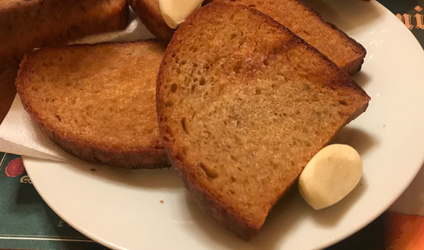

Popis
Pokud si můžete dovolit sporák, snadno povýšíte Váš chleba s máslem na topinku. Topinka má několik možných způsobů přípravy.
My se zde zaměříme na způsob přípravy topinky s margarínem. Případné dotvoření topinky závisí už jen na Vaší fantazii.

Příprava
Suroviny
- krajíc chleba
- margarín nebo olej
Postup
- rozpálíme pánev
- krajíc chleba namažeme z obou stran margarínem
- namazaný krajíc položíme na rozpálenou pánev
- po chvilce otočíme krajíc na druhou stranu
- pokud nám krajíc nepřipadá dostatečně opečený, otočíme zpět
- otáčení opakujeme, dokud není topinka dostatečně opečená z obou stran
Cena
Uvážíme cenu chleba a cenu margarínu. Bochník chleba stojí okolo 25,- kč a máme z něj zhruba 19 krajíců.
500g balení margarínu stojí okolo 45,- kč a na jednu topinku spotřebujeme zhruba 4g.
1,52 kč/ks
Cena za kus je vypočítána pouze s ceny surovin. Nezohledňuje cenu energií a použitého nádobí.